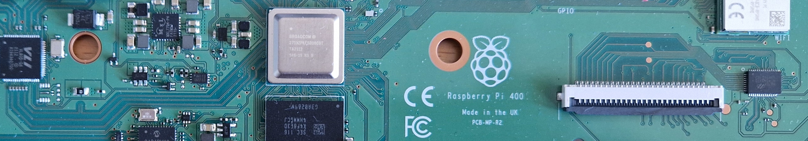
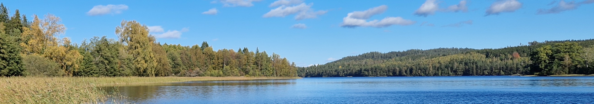
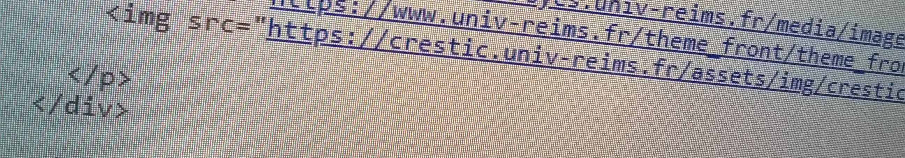
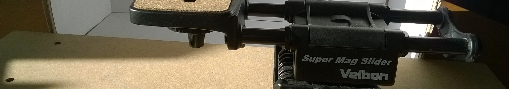
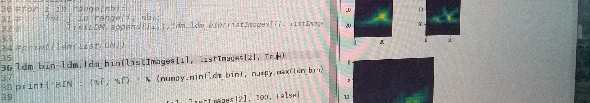
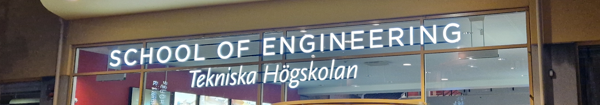
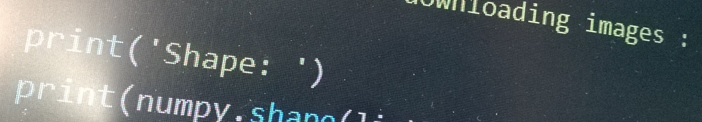
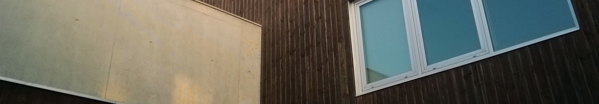
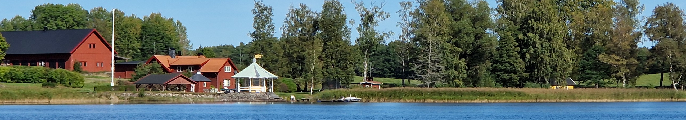
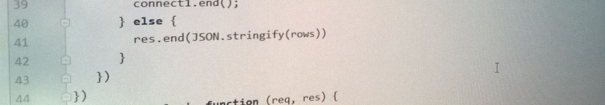
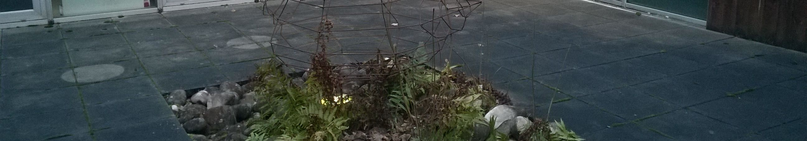
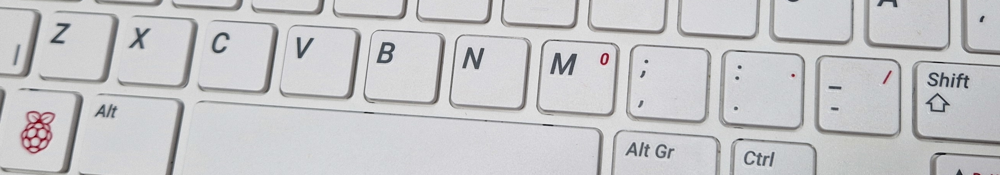
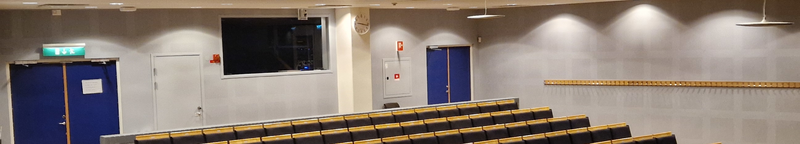
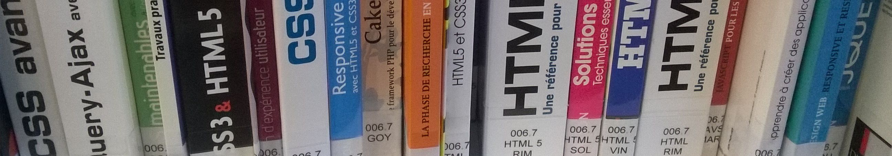
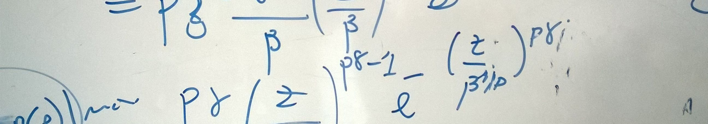
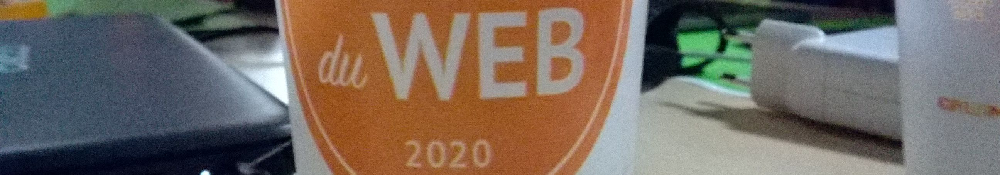
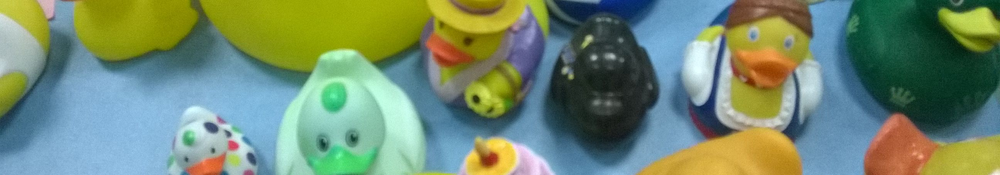
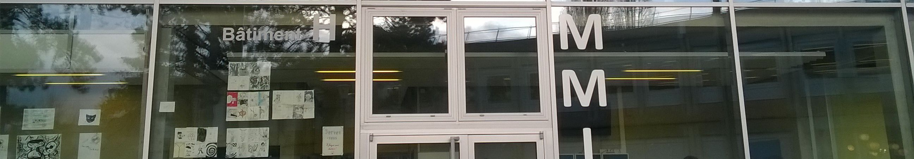
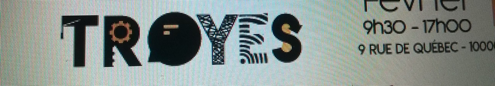
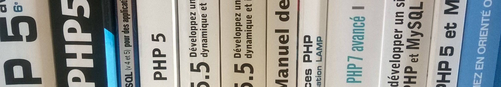
Ce site présente les activités de recherche et d'enseignement que je développe dans le département Computer Science and Informatics (CSI) à l'Université de Jönköping (JU) en Suède.
This site presents my research and education activities in the Computer Science and Informatics (CSI) department at Jönköping University (JU) in Sweden.
Quelques ressources et cours.
Several resources and courses.
C'est quoi LaTeX ? Cette session fait partie du cours "Research Methods in Computer Science".
What is LaTex? This lecture is part of the course "Research Methods in Computer Science".
Comment faire du traitement d'images ?
How to do image processing?
C'est quoi un système d'exploitation, comment ¸a marche ?
What is an operating system, how does it work ?
01 Organisation, 02 Linux Installation, 03 C Introduction, 04 C Language, 05 C GCC Make, 06 History of Computing,
Comment faire du traitement d'images ?
How to do image processing?
OrCID: https://orcid.org/0000-0002-9999-9197
OrCID: https://orcid.org/0000-0002-9999-9197
Quelques publications et travaux de recherche.
Several publications and research works.
Quelques documents sur l'informatique écrits tout au long de ma carrière...
Some documents on Computer Science I wrote during my career...
C'est quoi canvas en HTML?
What is canvas in HTML?
C'est quoi un algorithme ?
What is an algorithm?
C'est quoi un système d'exploitation, comment ça marche ?
What is an operating system, how does it work?
Comment représenter des données sur un ordinateur ?
How to represent data on a computer?
C'est quoi subfiles et comment l'utiliser en LaTeX ?
What is subfiles and how to use it in LaTeX?
Comment lancer des processus détachés en arrrière plan dans Linux ?
How to run detached background processes in Linux?
C'est quoi Support Vector Machine (SVM) et comment l'utiliser en Python ?
What is Support Vector Machine (SVM) and how to use it in Python?
C'est quoi les représentations parcimonieuses ?
What are sparse representations?
TikZ est un langage pour créer des graphiques dans LaTeX.
TikZ is a language to create amazing graphics inside LaTeX.
Recalage et pré-processing pour l'extraction d'information de lettrines.
Registration and information extraction for ornamental letters.
Qu'est-ce qu'XHTML et ses interactions avec CSS.
What is XHTML and its interactions with CSS.
Qu'est-ce qu'un réseau Wi-Fi, comment le déployer et garantir un haut niveau de sécurité.
What is a Wi-Fi network, how to deploy one and guarantee a high level of security.
Qu'est-ce qu'un réseau Wi-Fi, comment le déployer et garantir un haut niveau de sécurité.
What is a Wi-Fi network, how to deploy one and guarantee a high level of security..
Installation et configuration d'un serveur de translation d'adresses sous Linux.
Installation and configuration of a network address translation server in Linux.
Installation de OpenCV et Intel Integrated Performance Primitives (IPP) on Linux.
Installation of OpenCV and Intel Integrated Performance Primitives (IPP) on Linux.
Le langage HTML4 en une feuille.
HTML4 language in one sheet.
Le World Wide Web en une feuille.
The World Wide Web in one sheet.
Utilisation de la boîte à outils ondelettes de Matlab.
How to use the wavelet toolbox in Matlab.
C'est quoi Internet, comment ça marche ?
What is Internet? How does it work?